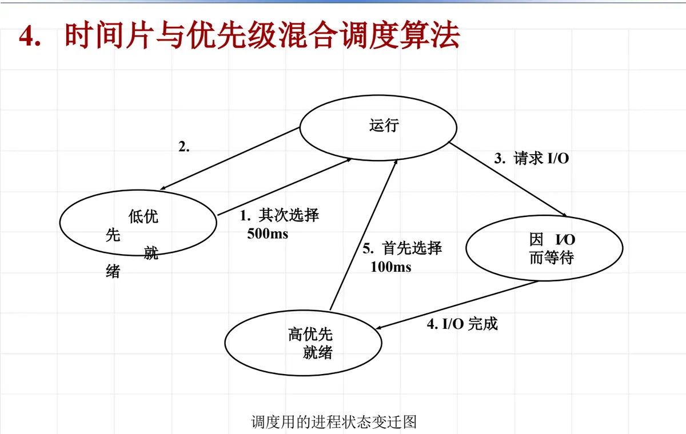

操作系统原理 · 第 6 章 处理机调度
6.8 时间片与优先级混合调度算法
前面几节分别讲了优先数调度算法与循环轮转调度算法：优先数调度能保证重要、紧急的进程先拿到处理机，代价是优先数低的进程可能长时间轮不上；循环轮转调度对每个进程一视同仁，但对那些频繁与设备打交道、需要及时响应的进程照顾不够。这一节把两者结合起来，讲一种时间片与优先级混合的进程调度算法：先按进程的行为把它分进不同的就绪队列，再给不同队列分配长度不同的时间片。算法的规则只有两条，但它把「谁先运行」和「一次能运行多久」这两个问题分开处理，是理解多级队列调度的一把钥匙。
1. 进程状态与队列结构
要把优先和时间片结合起来，先得把进程的处境分得比前面更细。在这种算法里，进程有四种状态：运行状态、低优先就绪状态、高优先就绪状态、因 I/O 而等待状态。与这四种状态相对应，系统维护三个队列：低优先就绪队列、高优先就绪队列、因 I/O 而等待队列。运行状态是进程正占用处理机、并不排在队里（同一时刻最多只有一个进程处于运行状态），所以四种状态只对应三个队列。
就绪状态被拆成「高优先」和「低优先」两级，是这种算法的出发点。课件里的划分依据是进程的行为：经常做输入/输出（I/O）的进程，即所谓 I/O 型进程，大部分时间都在等设备，每次占用处理机的时间很短，而它们往往直接对应用户的操作，交互性强，应该尽快得到响应，所以一旦就绪就进入高优先就绪队列；反过来，长时间进行计算的进程，即计算型进程，很少请求 I/O，一算就要占住处理机很久，交互性弱，晚一点响应影响不大，于是进入低优先就绪队列等待。（这段是从「谁应当先得到响应」的角度做的解释，便于理解两级就绪队列存在的道理。）
因 I/O 而等待队列与处理机调度没有直接关系：其中的进程正在等设备完成输入/输出，还不能运行，只有 I/O 完成后才会重新变成就绪进程，回到就绪队列里去。
| 进程状态 | 对应的队列 | 说明 |
|---|---|---|
| 运行状态 | 不排队（正占用处理机） | 处于运行状态的进程正在使用 CPU |
| 高优先就绪状态 | 高优先就绪队列 | 等待处理机，享有优先被选中的资格 |
| 低优先就绪状态 | 低优先就绪队列 | 等待处理机，高优先就绪队列为空时才轮到它 |
| 因 I/O 而等待状态 | 因 I/O 而等待队列 | 等待 I/O 完成，不参与处理机的挑选 |
2. 进程调度算法
课件把这种算法概括为「优先调度与时间片调度相结合的调度算法」，具体规则有两条，都发生在处理机空闲、需要重新挑选进程的时刻：
- ⅰ 当 CPU 空闲时，若高优先就绪队列非空，则从高优先就绪队列中选择一个进程运行，分配时间片为 100 ms；
- ⅱ 当 CPU 空闲时，若高优先就绪队列为空，则从低优先就绪队列中选择一个进程运行，分配时间片为 500 ms。
两条规则里参与挑选的只有两个就绪队列，「优先」就体现在挑选的次序上：只要高优先就绪队列里还有进程，就轮不到低优先就绪队列，这就是前面优先数调度的思路。「时间片」则体现在每次分配的长度上：高优先就绪队列给 100 ms，低优先就绪队列给 500 ms，后者是前者的五倍。一个进程的时间片用完之后，处理机重新变成空闲，于是又回到这两条规则的判断。
还要注意「CPU 空闲」这个前提：触发挑选的是当前进程交出处理机（时间片到、请求 I/O 或者运行结束），而不是某个队列里来了新进程。也就是说，高优先就绪队列里即使刚有进程就绪，也要等当前运行的进程让出处理机之后才可能被选中；而因 I/O 而等待队列中的进程根本不参加这次挑选，它们要等 I/O 完成、转入就绪队列以后才重新有资格运行。这跟 6.7 节讲的多级时间片循环调度是同一个思路——把就绪进程分级排队，级别高、时间片短，级别低、时间片长。
3. 进程状态变迁
把上面的状态和规则画在一起，就得到这种算法调度用的进程状态变迁图，如图 1。

图上把运行状态、低优先就绪、高优先就绪与因 I/O 而等待四个状态用带编号的箭头连成一个循环，两个就绪状态旁边分别标着 500 ms 和 100 ms，提醒读者从这两个队列里选出的进程拿到的时间片长度不同。五个编号代表的变迁如下：
- 1 = 其次选择：低优先就绪 → 运行。高优先就绪队列为空时，处理机才从低优先就绪队列里挑一个进程运行，所以叫「其次」选择，这一次分配的时间片是 500 ms。
- 2 = 时间片到：运行 → 低优先就绪。进程用完了分给它的时间片，就退回低优先就绪队列重新排队，等下一次被选中；时间片用光的进程降入的是低优先就绪队列，优先级不再保留。
- 3 = 请求 I/O：运行 → 因 I/O 而等待。运行中的进程提出输入/输出请求，只能先交出处理机、进入因 I/O 而等待队列，等设备把活干完。
- 4 = I/O 完成：因 I/O 而等待 → 高优先就绪。设备完成输入/输出后把进程唤醒，进程进入的是高优先就绪队列，而不是它原来所在的低优先就绪队列。
- 5 = 首先选择：高优先就绪 → 运行。只要高优先就绪队列非空，处理机空闲时总是先从这里挑进程运行，这一次分配的时间片是 100 ms。
这五条变迁里，变迁 4 是理解这种算法的关键：一个进程只要做过 I/O，完成之后就被放进高优先就绪队列，重新获得优先被调度的资格；而变迁 2 恰好相反，时间片用尽的进程落回低优先就绪队列。于是一个频繁请求 I/O 的进程会不断地走「运行 → 请求 I/O → I/O 完成 → 高优先就绪 → 首先选择 → 运行」这条快路，得到密集而短促的服务；一个长时间计算的进程则大多数时候待在低优先就绪队列里，靠较长的 500 ms 时间片一次做较多的工作。变迁 3 也顺带说明了调度时机：进程请求 I/O 会主动让出处理机，处理机空闲后就重新按规则挑选下一个进程。
| 编号 | 变迁名称 | 方向 | 发生的原因 |
|---|---|---|---|
| 1 | 其次选择 | 低优先就绪 → 运行 | 处理机空闲且高优先就绪队列为空，被挑中运行，时间片 500 ms |
| 2 | 时间片到 | 运行 → 低优先就绪 | 进程用完分配给自己的时间片，退回低优先就绪队列排队 |
| 3 | 请求 I/O | 运行 → 因 I/O 而等待 | 进程提出输入/输出请求，让出处理机等待设备 |
| 4 | I/O 完成 | 因 I/O 而等待 → 高优先就绪 | 设备完成输入/输出，进程被唤醒并进入高优先就绪队列 |
| 5 | 首先选择 | 高优先就绪 → 运行 | 处理机空闲且高优先就绪队列非空，被优先挑中运行，时间片 100 ms |
4. 调度效果
把两级就绪队列和长短两档时间片配起来，效果就落在两句话上：优先照顾 I/O 量大的进程，适当照顾计算量大的进程。
对 I/O 型进程来说，它每次占用处理机的时间本来就短，做完一小段工作就去请求 I/O；I/O 一完成又立刻被放进高优先就绪队列，享受「首先选择」的待遇，所以能很快再次得到响应。用户的交互感受因此比较流畅。对计算型进程来说，虽然它排在低优先就绪队列、不能和 I/O 型进程抢处理机，但系统给它的时间片长达 500 ms，一次可以连续计算较长时间，不至于被频繁打断——这正是「适当照顾」的含义。
两者配合起来，处理机和设备都能尽量保持忙碌：I/O 型进程不断把处理机让给别的进程、自己去用设备，计算型进程则填满这些空隙，把处理机的时间用足。课件因此把这种算法的效果总结为「提高了系统资源利用率」。
本节小结
- 时间片与优先级混合调度算法为进程定义了四种状态：运行状态、低优先就绪状态、高优先就绪状态、因 I/O 而等待状态，对应低优先就绪队列、高优先就绪队列和因 I/O 而等待队列三个队列（运行状态不排队）。
- 划分两级就绪队列的依据是进程的行为：经常做 I/O、交互性强、应当尽快响应的进程进高优先就绪队列；长时间计算、晚一点响应影响不大的进程进低优先就绪队列。
- 调度规则两条：CPU 空闲时高优先就绪队列非空，就从高优先就绪队列选一个进程运行、时间片 100 ms；高优先就绪队列为空，才从低优先就绪队列选一个进程运行、时间片 500 ms。两条规则都只在处理机空闲时触发。
- 五条变迁：1 其次选择（低优先就绪 → 运行）、2 时间片到（运行 → 低优先就绪）、3 请求 I/O（运行 → 因 I/O 而等待）、4 I/O 完成（因 I/O 而等待 → 高优先就绪）、5 首先选择（高优先就绪 → 运行）。其中变迁 4 最关键：I/O 完成唤醒的进程回到高优先就绪队列，而时间片用尽的进程只能降回低优先就绪队列。
- 调度效果是优先照顾 I/O 量大的进程、适当照顾计算量大的进程，从而提高了系统资源利用率；它和 6.7 节的多级时间片循环调度思路相通，只是这里只分两级、时间片固定为 100 ms 与 500 ms。
- 6.9 节的习题 6-3 用的正是这张状态变迁图，可以对照本节复习变迁的原因、因果变迁与调度策略。